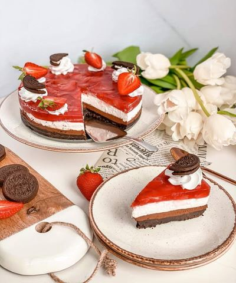

Moja beleška
SačuvanoSastojci
- Podloga
- Fil
- Jagoda sloj
Priprema
Za podlogu je dovoljno da promešate kašikom mleveni oreo keks sa istopljenim puterom i tome dodate krem sir. Lepo sjedinite pa utisnete na podlogu kalupa za tortice. Ja sam koristila kalup prečnika 20 cm iz @slatkadomacica.shop , a kako znam da se kalupi manjih dimenzija teže pronalaze, eto jedna preporuka od 💓 i podrška za Juliju ☺️ Dok se podloga steže u frižideru prvo spremite jagoda sloj jer je potrebno da se neko vreme hladi. Iseckane jagode, vodu, šećere i sok od limuna sipajte u šerpicu i na tihoj vatri je dovoljno samo da lagano prokuva. U to ubacite želatin koji ste prethodno pripremili prema uputstvu sa kesice i pomešajte toliko da se rastopi pa sklonite sa strane da se hladi. Za fil je potrebno da umutite krem sir sa šećerom u prahu, tome dodajte slatku pavlaku i lepo umutite. Pred kraj dodajte kremfix kako biste bili sigurni da će tortica biti dovoljno čvrsta. U polovinu fila dodajte istopljenu crnu čokoladu sa par kašika slatke pavlake i lepo sjedinite. Pre nego što tortu prelijete jagodama neka se lepo stegne u frižideru, pa na kraju u kalupu može stajati par sati pre sečenja ☺️
Originalni opis sa Instagrama
Oreo jagodica 🍓🤍 Ljudiii moji, kakav ukus! Pun, intenzivan, bogat.. Čaroban 🥰🥰🥰 Oblaci mi nisu bili naklonjeni kada sam želela da je slikam, ali ja se nadam da ću vam preneti delić mog doživljaja.. Oreo kremasta podloga, fil sa crnom čokoladom od 80% kakao delova, osvežavajuć cheese sloj i na kraju jagodeeee 🍓 Često mi pišete, tražite recepte za tortice, pa evo jedna u to ime i u ime toga što je sutra jedan jako poseban dan u našoj porodici 🥂 On voli oreo, ona jagode pa sam morala da smisljam nešto da razbijamo tremu pred bitan dan 🎉 Podloga: •200 gr mlevenog oreo keksa •100 gr istopljenog putera •100 gr krem sira Fil: •400 gr krem sira •120 gr šećera u prahu •120 ml slatke pavlake •100 gr crne čokolade 80% kakao delova •2,3 kašike slatke pavlake •kremfix Jagoda sloj: •250 gr jagoda •30 ml vode •2 kašike šećera •1 vanilin šećer •kašika soka od limuna •1 zelatin Za podlogu je dovoljno da promešate kašikom mleveni oreo keks sa istopljenim puterom i tome dodate krem sir. Lepo sjedinite pa utisnete na podlogu kalupa za tortice. Ja sam koristila kalup prečnika 20 cm iz @slatkadomacica.shop , a kako znam da se kalupi manjih dimenzija teže pronalaze, eto jedna preporuka od 💓 i podrška za Juliju ☺️ Dok se podloga steže u frižideru prvo spremite jagoda sloj jer je potrebno da se neko vreme hladi. Iseckane jagode, vodu, šećere i sok od limuna sipajte u šerpicu i na tihoj vatri je dovoljno samo da lagano prokuva. U to ubacite želatin koji ste prethodno pripremili prema uputstvu sa kesice i pomešajte toliko da se rastopi pa sklonite sa strane da se hladi. Za fil je potrebno da umutite krem sir sa šećerom u prahu, tome dodajte slatku pavlaku i lepo umutite. Pred kraj dodajte kremfix kako biste bili sigurni da će tortica biti dovoljno čvrsta. U polovinu fila dodajte istopljenu crnu čokoladu sa par kašika slatke pavlake i lepo sjedinite. Pre nego što tortu prelijete jagodama neka se lepo stegne u frižideru, pa na kraju u kalupu može stajati par sati pre sečenja ☺️ Pišite mi utiske 💓 #oreotorta #jagodatorta #oreojagodacheesecake #mojirecepti #idejezadezert #dezert #slatkisi #kremastatorta #tortebezpečenja #oreostrawberrycheesecake #onmytable #myreceipes